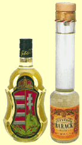

|
Kochrezepte
|
|
|
|
|
|

|
| |
|
|
|
|
|
|
| |
| |
|
|
|
|
|
|
|
|
|
|
|
|
|
|
|
| |
|
|
|
|
|
|
|
|
|
|
|
|
|
|
|
|
|
|
| |
| |
| Das
Wetter in Ungarn |
 |
| aktuelle
Temperaturen |
| |
|
|
|
|
|
|
Gulasch
und verwandte Gerichte
|
Das
deutsche Wort Gulasch ist ursprünglich
"Gulyás" auf
Ungarisch und bedeutet
Rinderhirt
auf Deutsch. Gemeint ist aber das alltägliche Essen des
Rinderhirtes. Unter
Gulasch
versteht man in Ungarn immer eine Suppe. Das
deutsche Gulasch bzw.
ungarische ist
jedoch ein Tellergericht und keine Suppe.
Der
Name von Pörkölt entstammt aus dem ungarischen Wort
"pörk". Das ist die im Fett angeröstete
Außenschicht des Pörköltfleisches. Das
ungarische Wort Pörk entstammt jedoch aus dem englischen
Wort Perk, wird identisch ausgesprochen - ein Hinweis
auf den
wahrscheinlichen Ursprung des Wortes Pörkölt, das wie
die Gulaschsuppe
auch aus dem Irish Stew abstammt - soweit man Gulasch in den Annalen
bis ins Könighaus des Hl. Stefans folgen kann.
Ob
Gulasch tatsächlich ungarischen
Ursprung aus den
asiatischen Steppen hat, darüber gibt es kein schriftliches
Dokument und kein Ungar meint das ernst, wenn er damit angibt. Das
erste ungarische Rezeptbüchlein aus dem 12. Jahrhundert
enthält rd. 70
Fischgerichte in den Pusztagebieten, die meist in Kesseln zubereitet
werden. Bei einigen Suppen erwähnt man, dass dies die
Art und Weise ist, wie der Pusztahirt
(Gulyás), der
früher wochen- oder monatelang ohne feste Behausung lebte,
das Gericht unter freiem Himmel zubereitet.
...Es
ist
belegt,
wie das
ursprüngliche Gulaschrezept vom
Irish Stew aus Irland über Deutschland in
das
ungarische
Könighaus kam.
Ein irischer Mönch, der zeitweilig
in einem Kloster im Münchener Raum lebte und im
Gefolge der Heiligen Gisela auf Anordnung und in Vertretung des Hl.
Wolfgangs (Erzieher der Gisela) weiter nach Ungarn zog,
brachte
dieses
Rezept direkt in die
königliche Residenz des Hl. Stefans nach Esztergom
mit und nicht in die Pußta. Dieser
Mönch begleitete Gisela nach Ungarn, als sie im Jahre 995 im
Alter von etwa 10 Jahren den damals etwa 25jährigen Stefan
heiratete. Für Stefan war sie nicht die erste Frau, aber
darüber
spricht man heute nicht mehr in Ungarn. Dieser
Mönch war lange
Zeit Giselas Patron
und
ging bei
Stefan
ein und aus. In Anlehnung an Gisela, beteiligte er
sich maßgeblich an der Christianisierung
von Ungarn.
|
| |
 |
| Irish
Stew |
|
Das Grundrezept der beiden Suppen unterscheidet sich rd. Tausend Jahre
später lediglich in der Anwendung von Paprikapulver, das erst
im 16. Jahrhundert nach Ungarn kam und dort erst langsam die Oberhand
gewann.
|
Beide
Suppen werden aus Lammfleisch, Zwiebeln, Kartoffeln, Karotten,
Petersilienwurzel und -grün gekocht, der
einzige Unterschied liegt in der Gewürzmischung. Paprika
ist eine ursprünglich südamerikanische
Pflanze, ebenso Kartoffel, die jedoch nicht zwingend in diese Suppen
gehört. Paprika
wurde den Ungarn erst im 16. Jahrhundert von
bulgarischen Bauern ins Land gebracht und wird seitdem üppig
in die Gulaschsuppe gemischt.
|
|
|
|
|
Rindsfleisch in
der Gulaschsuppe?
|
...ist relativ neu! - Gulaschsuppe
war früher grundsätzlich
aus Lammfleisch gekocht,
genauso wie Irish Stew in Irland. Bis zum Anfang des 19. Jahrhunderts
kaum bekannt, begann die Gulaschsuppe seinen Siegeszug in die
ungarische
Küche, nachdem einige Literaten sie zu
ihrem
Leibgericht
erkoren hatten. In letzter Zeit wird der Schriftsteller Gyula Krudy
vielfach zitiert, weil er Anfang
des 20. Jahrhunderts die
Gulaschsuppe speziell aus Rindsfleisch als Erster beschrieben haben
soll. Aber
damals kannte man das Rindsgulasch schon
mindestens 100 Jahre lang in Wien.
Über
Rindsfleisch in Ungarn: nicht in Vergessenheit geraten
sollte, dass Rindsfleisch in Ungarn in den vornehmen Küchen zu
Krudys Zeiten und auch lange danach noch gekocht, aber nicht
serviert, sondern entsorgt wurde. Noch in den 1960er Jahren
aß man das Rindsfleisch
gewöhnlich nicht einmal im koscheren Restaurant bei Kadar
(Restaurant) am Klauzal tér Platz im Zentrum von Budapest
und wenn, dann nur Bruchstücke davon, was gekocht wurde.
Bevor das
gekochte Rindsfleisch dort weggeworfen wurde, bekamen Insider nach
Voranmeldung am Anfang der
nachmittaglichen Ruhestunden (15
bis 18 Uhr) das Rindsfleisch aus der Suppe mit Brot
und frischem Meerrettich serviert. In Ungarn ist das ein
genauso beliebter Genuss mit Bier, wie Brotzeit in
Bayern.
|
 |
Karl Gundel
Senior gilt seit Ende des 19. Jahrhunderts als Pionier und
berühmtester Koch von Ungarn. Sein nach
ihm
benanntes Restaurant "Gundel" im Stadtpark von Budapest ist seit Ende
des 20. Jahrhunderts eine Pilgerstätte kulinarischer
Köche aus der ganzen Welt.
Er war ein
Revolutionär in der ungarischen Küche, indem er
vieles aus der
französischen Küche des Hochadels (erlernt in
Luxushotels in Böhmen und der
Schweiz) in seine Rezepturen
übernahm. Sein
Restaurant wurde 1949 verstaatlicht. |
Im Gegensatz zu manchen anderen
Angaben - so auch gegenüber Wikipedia, wo jeder seine Meinung
schreiben
und Tatsachen verfälschen kann - ist es bekannt, dass Karl
Gundel Junior im Frühjahr 1957 in einem Grazer Krankenhaus
starb und
nicht schon im November 1956 (damals verließ er Ungarn), wie
in Wikipedia laufend korrigiert wird.
Nach der Niederlage des Aufstandes und erneutem Einmarsch
der Sowjetsoldaten verließ
er am 28 November 1956 Ungarn.
Mehrere Personen von seinen Erben starben unter
merkwürdigen Umständen schon in der
Sowjetära, so auch der in Ungarn
berühmte Schauspieler Zoltán Latinovics, der sein
Direkterbe werden
sollte. Bei seinem Eisenbahnunfall an der Bahnstation in Balatonszemes
am
Plattensee war die
gesamte Führung des
Geheimdienstes vor Ort,
obwohl der Dienstort dieses Personenkreises rd.
150 km
entfernt in Budapest war. |
| Karl
Gundel
Junior veröffentlichte viele
Küchenrezepte, die in Ungarn
oft nachgeahmt und so von ihm zu
ungarischen Nationalspeisen erkoren wurden. Das wichtigste
davon für Küchengourmets ist die
Unterscheidung der vier
wichtigsten Gulaschgerichte, wie von ihm beschrieben und
in Ungarn heute peinlich genau wie
eine Küchenbibel beachtet wird: |
 |
Ungarisch:
- A gulyás
bőséges lével, hagymával és
paprikával készített leveses
étel, kockára
vágott burgonyával és
csipetkével.
- A pörkölt
ugyancsak paprikával készült, itt
azonban az apróra vágott hagyma
nagyobb szerepet játszik, leve sűrű,
mártásszerű, maga az étel raguhoz
hasonlítható.
- A paprikás
lényegében abban
különbözik a pörkölttől,
hogy csak fehér húsú
állatokból, tejföllel, vagy
tejföllel elkevert tejszínnel
készül,
némileg kevesebb hagymával és
paprikával. Úgy is mondhatnánk, hogy
ez a
pörköltnek finomabb, szalonképesebb
változata.
- A tokány
az
előző kettőhöz hasonló, de ennél a
húst nem kockára, hanem többnyire
kisujjnyi csíkokra vágjuk.
Néhány tokánynál a paprika
csak aláfestő
szerepet játszik, esetleg el is marad, viszont
előtérbe kerülnek egyéb
fűszerek és segédanyagok,
például a bors, a majoránna, illetve a
paradicsom, füstölt szalonna, kolbász,
gomba, zöldborsó stb.
|
Deutsch:
- Gulasch
ist eine in reichlicher Flüssigkeit mit Zwiebeln und
Paprika
zubereitetete Suppe mit in Würfeln geschnittenen Kartoffeln
und (kurze,
längliche, kleinfingerdicke
Mehlteigklößchen).
- Pörkölt
wird ebenfalls mit Paprika zubereitet, aber hier spielen die
kleingeschnittenen Zwiebeln eine größere Rolle, der
Saft ist hier
saussenartig, das Gericht ist vergleichbar mit einem Ragout.
- Paprikasch
unterscheidet sich vom Pörkölt eigentlich nur darin,
dass das Fleisch
von weißfleischigen Tieren stammt, mit Sauerrahm oder Sahne
zubereitet
wird, mit deutlich weniger Zwiebel und Paprika. Man
könnte
sagen,
dass Paprikasch eine feinere, gesellschaftsfähigere
Pörköltvariante ist.
- Der Tokanjer
ähnelt Pörkölt und Paprikasch, aber hier
wird das Fleisch nicht in
Würfeln,
sondern in kleinfingerdicke Streifen geschnitten. Bei einigen
Tokanjervarianten spielt der Paprika lediglich eine untermalende Rolle,
kann eventuell ganz weggelassen werden, aber in den Vordergrund treten
hier sonstige Gewürzmittel, wie Pfeffer, Majoran, bzw. Tomate,
geräucherter Speck, Wurst, Pilz, grüne Erbsen
usw.
|
Übrigens: Gourmetköche kochen das Gulaschfleisch im
Wein, Schweinefleisch im Weißwein, Rindsfleisch und
Paprikasch im Rotwein.
|
|
| |
| |
|
Gulasch
weltweit
|
Gulasch in Deutschland:
Wenn
man in Deutschland von Gulasch spricht, dann weiß
ein jeder sofort, dass das Rezept ungarisch sein soll. Dass das Wort
Gulasch,
zu
Deutsch aus "Gulyás" erkoren,
ein
ungarisches Wort ist und synonym auch für den Rinderhirten
steht, auch das wissen viele in Deutschland. Es gibt aber
einen wesentlichen Unterschied: Unter Gulasch versteht man in Ungarn
immer die Gulaschsuppe, in Deutschland aber das, was in Ungarn
Pörkölt heisst. Dabei wird Gulasch in
Deutschland ziemlich anders vorbereitet, als Pörkölt
in Ungarn. Soweit
schriftlich nachweislich, man
kann davon ausgehen, dass das
ursprüngliche
Gulaschrezept für die Gulaschsuppe in
Deutschland früher bekannt war, als in
Ungarn - siehe oben.
|
Gulasch in Österreich:
In Österreich wird das Gulaschrezept
so einverleibt,
als wäre Ungarn noch bei Österreich, als die
Habsburger die gesamte Monarchie samt Balkan als ihr Eigentum
betrachteten. Wie es aus immer neueren
Kochbüchern hervorgeht, tun es
viele auch heute noch. Wenn man aber näher rangeht, stellt
sich schnell heraus, dass diese
Kochbücher voneinander abgekupfert werden aus alten
Zeiten, möglichst
aus
Omas Bücherregal,
als Böhmen und Ungarn noch bei Österreich war. Wie
kurzsichtig die Autoren solcher Kochbücher sind, zeigt die
Anlehnung an die benachbarte Pannonien im westlichen Ungarn, dabei ist
Gulasch eher in den östlichen Landesteilen Ungarns
populär, wo der Paprika wächs.
Auch die
österreichische Legende
über die Erfindung
des Gulaschrezeptes hinkt heftig, denn nur das Wort Gulaschkanone, aber
nicht
das Gulasch und schon gar nicht die Gulaschsuppe von
Österreichern erfunden ist. Es gibt auch keine
Erklärung dafür, warum ein österreichisches
Küchenrezept ungarische Titulierung haben sollte, die
Österreicher normalerweise nicht verstehen. Das Wort
Gulaschkanone stammt
womöglich
wirklich von österreichischen Soldaten. Nach
dem 1848/49er Ungarnaufstand während
eines Rachefeldzuges gegen
die ungarische Bevölkerung in Siebenbürgen soll es
passiert sein, dass ein
österreichischer Soldat den Suppenkessel nach dem ersten
Löffel als Gulaschkanone
beschimpfte. Das ist passiert,
weil dem Koch ein ganzer Sack scharfer Paprika
in die Suppe fiel.
- So a Schmarrn... und das soll man auch heute noch glauben aufgrund
der
laufend mehr - so oder so voneinander abgekupferten -
Kochbücher von Petra
K., Gertrud H.,
Gräfin
Sowiezoo u.a.
|
Goulash in Nordamerika:
Die aus
Budapest stammenden
Hollywood-Schauspielerinnen Éva und Zsazsa Gábor
haben Hungarian Goulash in den 1960er Jahren in einer
TV-Familienserie
in
Nordamerika populär gemacht, als Évas Film-Ehemann
Laci den Grand Damen laufend Goulash und Paprikash, meist
Chickenpaprikash kochte - auf
laufend neue Art und Weise, was zwischendurch
beim
Plaudern den Damen gerade einfiel.
Laci war ein guter Koch, erfüllte
aber jeden
Wunsch der Grand Damen. So kochte er das Goulash mal in viel
Sauerrahm, gelegentlich im Rotwein, dabei meckerte
er ein bischen und machte sich über die Wünsche der
Damen laufend lustig -
zwischendurch auf Ungarisch. Es
war zwar eine
geschmackslose Beleidigung
für die ungarische Küche, man sollte ihnen jedoch
verzeihen,
denn die Damen waren Juwelierstöchter und haben selbst nie im
Leben gekocht. Was sie da den Amerikanern vorgaukelten, das hat mit dem
ungarischen
Originalrezept für Gulasch und Paprikasch wenig zu
tun, aber Laci
ließ sich nicht überrumpeln und bügelte
vieles zurecht. Goulash
war nach
dem zweiten Weltkrieg in Nordamerika noch weitgehend unbekannt.
Heute gehört Hungarian Goulash in den
USA zu
den fünf beliebtesten Küchengerichten - laut einer
Gallup-Umfrage
- und
Chickenpaprikash ist dort ebenso bekannt. Wenn Hungarian Goulasch oder
Chickenpaprikash im
Übersee in Sauerrahm oder sogar in Sahne gekocht wird, dann
ist das ein
klarer Hinweis auf die Gábor Sisters in Hollywood.
YouTube ist voll
von Videos, in denen Nachkömmlinge von ungarischen
US-Einwanderern angeben, sie hätten das Gulasch Rezept von
ihren
Omas so
erlernt, dann ist das einfach unglaubwürdig für
ungarische Ohren und ein
klarer Hinweis, dass die Oma in Ungarn noch nicht kochen konnte. |
|
|
|
| |
|
Gulasch
wird in Ungarn Pörkölt genannt
|
| |
|
|
 |
Herdentiere
aus den Pusztagebieten, wie das Steppenrind, das
Zackelschaf und das Wollschwein Mangalica liefern seit eh und je das
Grundmaterial für Pörkölt und Gulaschsuppe.
Sie werden ganzjährig im Freien gehalten und sind bei
extensiver Bewirtschaftung eine der touristischen Attraktionen in der
Hortobágyer Puszta bei Debrecen.
Nachdem
nun die EU-Hausschweine genetisch
überzüchtet auch unter Konstruktionsfehler leiden,
fand man ihre letzte Rettung beim ungarischen Wollschwein "Mangalica".
Aus ählichen Gründen wird auf das genetische Material
des ungarischen Zackelschafes "Racka" zurückgegriffen. Es
ist verwandt mit den
krankheitsgeplagten Heideschnucken in der Lüneburger Heide.
|
|
Die
ungarischen Pusztahirte haben mindestens über Tausend Jahre
lang
das genetische
Material Ihrer Herdentiere in ihrer ursprünglichen Form bis
heute retten können. Sie schmecken anders, als die Haustiere
nach Brüsseler EU-Norm und sorgen für die einmalig
hervorragende
Stellung der ungarischen Küche unter den großen
Küchen Europas. Die EU-Schreibtischtäter haben
die Schuld, wenn die Ungarinnen in den
Lebensmittelgeschäften kaum
noch Fleisch aus dieser gesunden einheimischen Produktion finden.
Es
wäre sowohl aus ökologischer, als auch aus
ökonomischer Sicht
unverzeihlich, wenn die ungarischen Hirte ihre Jahrtausende alte
Tätigkeit nach dem EU-Beitritt des Landes auf die
Brüsseler
Gesetzgebung anpassen und auf die industrielle Massenproduktion
umstellen sollten. Hätten sie das vor Jahrzehnten getan, wie
z.B. die
deutschen Landwirte, dann wäre das genetische Material
für die
Rückkreuzung der EU-Schweine nicht mehr vorhanden.
|
 |
Gulasch oder
Pörkölt? Die Rinderhirte der Puszta
kochen ihre Suppe seit eh und je in Kesseln. Das Kesselgulasch hat eine
andere Rezeptur, als die ungarische Gulaschsuppe.
Die
Namensgebung
ist schon verwirrend, denn das ungarische Wort Gulyás in
Ungarn ausschließlich für die Gulaschsuppe steht.
Das in Deutschland als Gulasch bezeichnete Gericht wird in Ungarn
Pörkölt genannt.
Während Pörkölt in Wien
noch immer Pörkölt heisst und so gekocht wird,
ähnelt
Gulasch dem Pörkölt umso weniger, je weiter man in
Deutschland von Ungarn entfernt ist. Die deutsche und die ungarische
Gulaschsuppe sind
miteinander nicht zu vergleichen. |
In Ungarn ist die Gulaschsuppe eine
dünne Suppe und in
Deutschland eher ein Eintopfgericht. So ähnelt das
norddeutsche Gulasch, trotz
ungarischer Bezeichnung, eher dem Originalrezept "Irish Stew" aus
Irland. Ob in der Suppe oder im Pörkölt, in
Deutschland werden in
beiden Fällen eher nur die Fleischreste, in Ungarn jedoch die
besten Fleischstücke
verwendet, oft das beste Rinds- oder Kalbsfilet. So fühlt
sich ein jeder
Ungar unangenehm überrascht, manch einer sogar beleidigt, wenn
ihm in einem deutschen Restaurant Gulasch
serviert wird. Und weil die Ungarn Gulasch als
Landesspezialität betrachten, wollen sie gar nicht wahr haben,
das das original Gulaschrezept von einem irischen Mönch aus
München nach Ungarn gebracht wurde - kurz vor der
Krönung des Hl. Stefans. - Übrigens: Irish Stew
erlitt bei der Auswanderung nach Nordamerika das gleiche
Schicksal, wie die Gulaschsuppe und wurde im Übersee zum dickflüssigen
Eintopfgericht mit viel Inhalt, oft
mit Mais u.a. Gemüse, das man in den
europäischen Küchen kaum kennt.
|
|
| Pörkölt
bzw. Gulasch |
- gemeint ist hier Gulasch, das
man in Ungarn Pörkölt nennt -
Zutaten: 750 g
Lammfleisch (Schulter oder Schlegel), 3 mittelgroße
Zwiebeln, etwas Fett oder Öl, 2 gehäufte
Teelöffel Paprikapulver edelsüß, 2
gehäufte Teelöffel Paprikapulver rosenscharf, 1/2
Flasche Rotwein oder Fleischbrühe, 2 gelbspitze
Paprikaschoten, 1 große Tomate oder entsprechende Menge
Tomatenmark, Salz.
Zubereitung: Die
Zwiebeln schälen, fein hacken und im Fett anrösten,
glasig werden lassen. Vom Herd nehmen und das Paprikapulver
hineinrühren, das in Würfel geschnittene Fleisch
dazugeben, den Topf wieder auf den Herd stellen, mit dem Rotwein und
Wasser oder mit Fleischbrühe aufgießen, etwa 10
Minuten lang schmoren lassen. Salz und Tomatenmark oder die
kleingewürfelten Tomaten dazugeben. Im geschlossenen Topf in
etwa einer
Stunde gar schmoren.
Serviervorschlag:
gekochte Kartoffeln, Reis, Nokedli (Mehlteignockerln bzw. Nockerli)
oder Csipetke.
Die ungarischen Nockerli sind
identisch mit Spätzle in Form
der bayerischen Knobben. Es gibt aber einen Unterschied:
von den in "Nokedli" umgetauften Knobben behaupten die Ungarn, das sei
eine ungarische
Spezialität. Wie auch immer - in
Ungarn waren die ungarischen
Nokedli vor der Ankunft der Donauschwaben
unbekannt, dafür kannte man aber Csipetke.
Beilagen:
Kopfsalat, Sauerteiggurke oder Gurkensalat.
Getränke dazu:
Zum Pörkölt schmeckt am besten schmeckt
Barackpálinka (Aprikosengeist) vor
dem Essen, ein
trockener Rotwein aus den Weinbaugebieten Balaton oder
Villány, wie der "Balaton" oder aus der Rebsorte Merlot
und nach dem Essen zur Durstlöschung - je nach
Schärfe des verwendeten Paprika mehr oder weniger kaltes Bier.
...so
wird Pörkölt mit
Nokedli serviert:
|
|
| |
| |
|
Unter
Gulasch
versteht man in Ungarn eine Suppe
|
In
Ungarn kennt man grundsätzlich zwei verschiedene
Gulaschsuppen
|
|
|
|
|
| |
| Gulaschsuppe
/ Gulyásleves |
| Zutaten: 500
g Lammfleisch, 3 mittelgroße
Zwiebeln, 2-3 Knoblauchzehen, 3-4 Paprikaschoten,
2 Tomaten, 1 kg Kartoffeln, 1 Petersilienwurzel (Wurzel und nicht das
Grün), 2 große
Karotten, 1/4 TL
Kümmel, Paprikapulver 2 EL edelsüß und 2 TL
rosenscharf, Salz, 1
Batzen Schmalz. |
|
Zubereitung: In
einem großen Topf die kleingehackten
Zwiebeln salzen, im Fett dünsten und glasig werden lassen,
vom Herd nehmen, Paprikapulver, zerdrückte Knoblauchzehen, das
in kleine Würfel geschnittene Fleisch dazugeben und wenden,
bis auf allen Fleischstücken eine geröstete
Schicht gebildet wird. Kleingeschnittene
Paprikaschoten und Tomaten dazu mischen und würzen. Topf
mit Wasser füllen, bis alles bedeckt ist. Kochvorgang ist
abhängig vom Herd und Topf, am besten benutzt man einen
Schnellkochtopft, darin ist das Fleisch in 25 Minuten gar gekocht,
anschließen abschmecken und nach Bedarf nachwürzen.
In
Scheiben geschnittene Petersilienwurzel, Karotten und die
gewürfelten
Kartoffeln dazugeben und 15 Minuten lang weiterkochen.. |
|
Die
Gulaschsuppe bei Ilona in
Wien.
|
| |
  |
Weniger
von Paprika, vielmehr von Pfeffer bekommt man Durst, je
schärfer gewürzt wird, umso mehr. Viktor Orban sei
Dank für die Legalisierung des Hausgemachten in Ungarn. Als
die großen Brennereien, vor
allem Zwack für ihr Monopol in Brüssel gegen
die Zulassung von Hausbrennereien protestierten, bewies
Viktor Orbán genug Hartnäckigkeit bei der
Durchsetzung dieser
Regelung. |
Gott
sei Dank, denn die großen Industriebrennereien mit laufend
neuen
Geheimrezepturen stolzieren und man sollte schon wissen
dürfen, was einem nach Geheimrezepturen
mit zugedichteten Fabelmärchen vorgegaukelt wird. Beim
Hausgemachten weiß man bescheid, von wo der Geist
kommt.
|
Serviervorschlag: Vor
dem Essen trinkt man Hausgemachtes
(Házipálinka)
oder Aprikosenschnaps
(Barackpálinka), Kräuterschnaps, z.B. Unicum bei
Rindsfleisch, zum
Essen einen
Rotwein der Sorte Portugieser aus Villány oder
Stierblutwein
aus Szekszárd und nach dem Essen Bier.
|
  |
|
| |
| |
Die
häusliche Zubereitung der Ungarischen Gulaschsuppe auf
traditionelle Art zuhause: |
|
|
|
|
|
Wie
jedes Haus sein eigenes Geheimnis hat, so herrschen in jeder
Küche andere Gewohnheiten. Gulasch kann man so oder so
zubereiten. Die Gulaschsuppe ist jedoch so original ungarisch, wie die
professionelle
Köchin sie in diesem Video unter häuslichen
Verhältnissen zubereitet. In einem
ungarischen Restaurant
bekommt man die Gulaschsuppe viel dünner und
mit wenig
"Inhalt", wie der Spitzenkoch Karl Gundel dies beschrieb. Im Video
wurde alles gezeigt, was in die Suppe kommen kann,
aber vieles davon nicht unbedingt kommen muss. Die Anwendung von
Vegetapulver ist
das einzige bei dieser Zubereitung, worüber man streiten kann.
Vegeta enthält zwar nur 15% Trockengemüse und dient
als Geschmacksverstärker, enthält aber
natürliche Inhaltsstoffe, die z.B.
im Gewächshausgemüse aus dem Supermarkt
fehlen. Vegeta hilft dabei, dass auch
Anfänger in der Küche schnell zurecht kommen, weniger
falsch
machen können. Aber das wichtigste dabei ist, dass das Salz
Steinsalz und
kein Meeressalz ist und damit zum kräftigen Gulaschgeschmack
beiträgt. Autor dieser Zeile
kocht regelmäßig seit Jahrzehnten Gulaschsuppe in
Deutschland. Je nach Lust und Laune wird dabei dies oder das nicht
immer mitgekocht, aber das Grundrezept mit allem Drum und Dran ist
immer gleich - wie
bei
Mama und im obigen Video
zu sehen ist.
Grundsätzlich gilt für die Gulaschsuppe:
- Fleisch: Lamm, Schwein, Rind
- auch Kutteln. Alles ist erlaubt, Hauptsache: rotes Fleisch.
- Knochen
im Fleisch soll mitgekocht werden - viele mögen am liebsten
dicke Rippen. In Restaurants meidet
man Knochen in der Gulaschsuppe, weil die Art und Weise, wie
der Gast das Knochengerippe am Tisch geniessen kann, angeblich nicht
zur vornehmen Gastronomie passt.
- Csipetke, wie im
Video gezeigt und erklärt wird, gehört nicht
unbedingt in die Gulaschsuppe. Die Zubereitung von Csipetke ist
besonders zeitaufwändig
und kann durch Spätzle/Knobben bzw.
ersetzt werden.
Spätzle enthält viel mehr Feuchtigkeit in sich, als
Csipetke, wird nach einiger Zeit in der Suppe klebrig
weich und
wird
daher in unserem gesamten Bekanntenkreis - wenn überhaupt -
immer getrennt gekocht und je
nach
Bedarf individuell zur Gulaschsuppe gereicht.
- Sauerrahm
(Saure Sahne) mildert die Schärfe von Paprika und hilft gegen
Sodbrennen, gehört aber nicht zum
original Grundrezept von Gulasch, sondern zum Paprikasch, das
vorwiegend mit weißem Fleisch gekocht wird. Manche
mögen Gulasch und Gulaschsuppe trotzdem mit etwas
Sauerrahm. Im Übersee kochen Angeber die
Gulaschsuppe im Sauerrahm
oder Wein - da ist nichts mehr übrig vom
Originalrezept,
aber Eva und Zsa Zsa Gabor haben es den Nordamerikanern so
eingeprägt - von wegen Hollywood...
|
|
| |
| |
| Kesselgulasch
/ Bográcsgulyás |
| |
|
Das
Bild links zeigt, wie Kesselgulasch in der Puszta von den Rinderhirten
bei Lagerfeuer zubereitet wird.
Das Bild rechts zeigt das
Kesselgulasch mit den
wichtigsten Zutaten, Zwiebeln, Knoblauch und Paprika. Der Inhalt ist
variantenreich. Gourmetköche kochen die Gulaschsuppen oft im
Wein oder Bier. |
 |
Zutaten: 1
kg Lammfleisch, 3
mittelgroße Zwiebeln, 750 g festkochende Kartoffeln, 5
Knoblauchzehen, 2 gelbe oder grüne Paprikaschoten, 1
große Tomate, 5 Schnittlingshalme, 1 Bund
Selleriegrün, 1/2 TL Kümmel, Paprikapulver 2 TL
edelsüß und 2 TL rosenscharf, 1 Batzen Fett, Salz.
Zubereitung: Fleisch
waschen und in 1 cm große Würfel schneiden.
Feingehackte Zwiebeln im Fett anrösten bis sie glasig werden.
Vom Herd nehmen und Paprikapulver, Knoblauch und Kümmel
dazugeben, umrühren. Den Topf wieder auf den Herd stellen,
Fleisch hineingeben, salzen und bei großer Hitze anbraten.
Mit Wasser, Wein oder Bier aufgießen und kochen, bis das
Fleisch gar wird.
Kartoffeln
pellen und würfeln (gleichgroß, wie das
Fleisch), Tomate schälen und würfeln,
Selleriegrün waschen. Wenn das Fleisch gar ist alles in den
Topf geben und weiterkochen, bis auch die Kartoffeln gar sind.
Selleriegrün entfernen.
Serviervorschlag
- Wie bei der Gulaschsuppe - Vor
dem Essen trinkt man Házipálinka
(Hausgemachtes) oder Aprikosenschnaps
(Barackpálinka) bei
Schweinefleisch in der Suppe, Kräuterschnaps, z.B. Unicum bei
Rindsfleisch, zum
Essen einen
Rotwein der Sorte Portugieser aus Villány oder
Stierblutwein
aus Szekszárd und nach dem Essen Bier. |
|
| |
| |
|
Gulaschgerichte mit
Sauerkraut
|
Die nächsten drei Gulaschgerichte zeichnen sich durch die
Verwendung von Sauerkraut aus. Die Rezepte werden in Ungarn so
betrachtet, als wären sie landestypisch in
Siebenbürgen bzw. Seklerland (etwas größer
als Siebenbürgen). Tatsache ist aber, dass diese
Sauerkrautgerichte auch in der türkischen
Küche fast genauso bekannt sind. Es liegt daher nahe, dass
diese Rezepte wahrscheinlich von den Türken in der
rd. 150 Jahre dauernden Besatzungszeit (bis 1686)
übernommen wurden.
Beim Zubereiten ist es wichtig, dass man beim Kochen das von den
römischen
Soldaten entdeckte, seit zweitausend Jahren bekannte Sauerkraut
unverfälscht verwendet. Das
kann jeder
ganz einfach herstellen: Kraut hobeln, mit Salz mischen, stampfen, anschließend im
Glas oder Tontopf ca. 3 Wochen lang
heranreifen bzw. gären lassen. Behälter
wegen der Gasbildung nicht ganz schließen. Ohne
Konservierungsstoffe ist dieses Sauerkraut nicht nur schmackhafter, sondern viel
preisgünstiger als gewerblich hergestelltes
Sauerkraut, nicht zu sprechen von Weinsauerkraut, das geschmacklich zu
den
Gulaschgerichten überhaupt nicht passt. Optionell kann
man Loorberblätter, Pfeffer- und
Korianderkörner, Kümmel, Dill, ferner Zwiebel- und
Apfelscheiben ins gehobelte Kraut mischen. - Wir wollen hier nicht
darauf eingehen, wie man das Sauerkraut bei Bedarf auch in zwei
Stunden zubereiten kann - wie in der
koreanischen Küche.
Bei den folgenden drei
Gerichten handelt es sich um Gulasch bzw. Pörkölt,
das mit Sauerkraut gekocht wird: |
|
|
| Szegediner
Gulasch / Székelykáposzta |
Es
ist ein
Pörkölt nach Hausfrauenart mit viel Inhalt, das abschließend
mit
Sauerkraut zusammen gekocht und daher ziemlich anders gewürzt
wird.
|
Von den Ungarn
Székelykáposzta, von den Ungarndeutschen Seklerkraut genannt, wird diese
Landesspezialität aus
Siebenbürgen in Dutschland Szegediner Gulasch genannt und
soll aus im Süden von Ungarn
stammen. Der Legende nach war der
deutsche Taufpate ein fahnenflüchtiger Soldat
aus Sachsen im
ersten
Weltkrieg, der in einem Lokal in Szegedin das Rezept
hundertmal abschreiben und anschließend dem Wirt
auch
noch einen Vers über
dieses Gericht dichten musste, weil er das Essen nicht bezahlen
konnte. - Wie auch immer, dieser Soldat aus Sachsen machte den
Szegediner Gulasch bei uns populär. Hier beschreiben wir das
Originarezept aus Ungarn.
|
 |
Zutaten:
500 g Lamm- oder Kalbsfleisch aus der Keule und 500 g dicke Rippen, 500
g Sauerkraut, 50 g Schmalz oder
Butter, 3-4 Zwiebeln, 2-6 Knoblauchzehen, 1 Esslöffel
Paprikapulver
(charakteristisch ist für die ungarische Küche, dass
man edelsüßen und
rosenscharfen Paprikapulver in gleichen Mengen verwendet), 1
Messerspitze
gemahlener Kümmel, 1/4 Zitronenschale, 4 reife Tomaten, 1
große
Kartoffel, Salz,
evt. etwas Zucker, 0,2 l Sahne oder
Sauerrahm (Saure Sahne). - Wichtig: man sollte unbedingt etwas
geräuchertes
Fleisch mitkochen. Hierfür kann man
geräucherte Rippen nehmen oder
auch
geräucherte Wurst (am besten oder
auch Kabanossi) oder/auch gewürfelte
Katenschinken
verwenden.
|
 |
Zubereitung:
Zwiebeln und das Fleisch grob würfeln, Knoblauchzehen
zerschlagen
(Küchenprofis tun das mit der Hammerseite des
Küchenbeils oder eines
kräftigeren Messers in 1 Sekunde und
quälen sich nicht mit Knoblauchpresse, die man am besten in
den
Ladenregalen lassen sollte), Zitronenschale abreiben, Tomaten
schälen
und
zerdrücken, Kartoffel und eine Zwiebel zerreiben und in das
Sauerkraut
mischen.
Arbeitsgang
1:
Die
grob gewürfelten Zwiebeln im Fett glasig werden lassen,
Knoblauch,
Zitronenschale, Kümmel, Salz, Paprikapulver, Pfeffer
hineinmischen und das
Fleisch darin mehrfach wenden - anrösten.
Arbeitsgang
2:
Topf mit Wasser
auffüllen, bis das Fleisch bedeckt ist, die Tomaten dazugeben,
alles
verrühren. Bei kleiner Flamme zugedeckt etwa 40 Minuten lang
dünsten.
Arbeitsgang
3:
Sauerkraut und das
geräucherte Fleisch hineingeben und etwa 40 Minuten lang
weiterkochen. Mit Salz
und evt. auch etwas Zucker abschmecken.
Serviervorschlag:
Aufgetischt
wird mit Salzkartoffeln und es sollte jedem überlassen werden,
ob und wenn
schon, dann wie viel Sauerrahm (saure Sahne) auf das Kraut
träufelt.
Vor
dem Essen
wird Schnaps, Roter Sauvignon oder Erlauer Stierblut
serviert. +++ Nach dem Essen
wird ein
süßlicher Weißwein, Graumönch,
Lindenblättler, Zweigelt oder eben ein
blondes Pils serviert.
+++ Wenn Sie nun auch noch einen Espresso oder Kapuziner
(Capuccino) mit viel
Schlagober (Schlagsahne) trinken, dann haben Sie
sich - je nach
Alkoholmenge - auf einen langen
und tiefen Schlaf
bestens vorbereitet. |
|
Wie das vorige Bild erahnen lässt, bei diesen
Sauerkrautgerichten ist Durst angesagt. Wer vor dem Essen noch keine
Durst hat, sollte zuerst den Gaumen mit
Házipálinka (hausgemachter Schnaps)
ölen, damit es besser schmeckt und nach dem Essen
benötigt man schon einige Durstlöscher sowieso.
|
|
|
|
Gefülltes
Kraut / Töltött káposzta
- Kohlroulade auf ungarische Art - |
|
Am
Heiligabend isst man in Ungarn nach der Karpfensuppe entweder Wiener
Schnitzel oder
Gefülltes Kraut. Spätestens nach dem Heiligabend wird
überall Gefülltes Kraut in einem großen
Topf gekocht wenn
man viele
Gäste erwartet, notfalls wird nachgekocht auch noch zur Jahreswende.
Gefülltes Kraut schmeckt umso besser, je öfter es
erwärmt
wird - vielleicht nach zwei Tagen schmeckt Gefülltes Kraut am
besten.
|
 |
Die
Geschichte vom gefüllten Kraut:
Eingelegte Weißkohlblätter, mit einer
Hackfleischmasse gefüllt und mit
Sauerkraut gekocht, kam aus der osmanischen Küche nach Europa.
Ursprünglich
aus Ziegen-, Lamm- oder Kalbsfleisch vorbereitet, verwenden die Ungarn
eher
Schweine- oder Rindsfleisch. Ein schon im 18.
Jh. auf dem Balkan und in Ungarn bekanntes Gericht, das in mehreren
Varianten
vorkommt: nur in Wasser gekochte Füllungen ohne Saft und
Sauerkraut oder als
angedicktes Gemüse - oft mit Tomaten -, dazu
Fleischklößchen. Statt Kohl-
werden auch Wein- oder Meerrettichblätter gefüllt. Im
östlichen Teil des
ungarischen Sprachgebietes wird die Kohlroulade auch mit fleischloser
Füllung
serviert. Das mit Fleisch gefüllte Kraut ist vor allem im
Winter ein typisches
Sonntags- oder Festtagsessen. Beim Hochzeitsmahl tritt es vielerorts an
die
Stelle von Sauerkrautgemüse mit größeren
Fleischstücken. Die Hackfleischfüllung
enthielt oft Mais, Gerste oder Hirse, heute vorwiegend Reis.
|
Zutaten für 10
Personen: 20
Stück Sauerkrautblätter (man bekommt ganze
Kohlkpfe bei den Türken in Deutschland), 1,5 kg
Sauerkraut (bloß kein Weinsauerkraut, am besten
schneidet man den Rest des sauren Kohlkopfes klein), 500-500g
Schweinsschulterblatt und Schweinsrippen, 1 nicht geräucherte
und 1 geräucherte Schweinshaxe, 5 Paar geräucherte
Kochwurst, 50ml trockener Weisswein und saure
Sahne, 100g geräucherter Speck, 1 kleine Zwiebel, 4EL
gehackter Dill, 2 Blätter von Poleiminze (Mentha pulegium)
oder Wasserminze (Mentha aquatica), 1TL roter Gewürzpaprika,
10 Stück Schwarzer Pfefferkorn, gemahlener schwarzer Pfeffer
und Salz nach Geschmack.
Vorbereitung: Das
Sauerkraut durchwaschen und abtropfen. Die harten Ader der
Krautblätter entfernen, aber darauf achten, dass die
Blätter sich nicht reißen. Das Schulterblatt
und die Hälfte vom Speck farschieren oder durch den Wolf
drehen, den gewaschenen und abgetropften rohen Reis, Salz,
gemahlenen Pfeffer, die geriebene Zwiebel, roten Paprika dazugeben.
Alles gut durcharbeiten. Eine große Kasserolle mit dem in
dünnen Streifen geschnittenen restlichen geräucherten
Speck auslegen.
Zubereitung: Auf
dem Krautblatt den mit dem Fleisch vermischten Reis verteilen, und fest
aufrollen. Die zwei Enden des Blattes so schließen, dass die
Füllung nicht rausfließen kann. In die mit Speck
ausgelegte Kasserolle ein Viertel Teil des Krauts legen. Mit Minze und
Dill bestreuen, dann salzen, dann die vorher gewaschene,
zerstückelte, ohne Knochen geräucherte, frische Haxe
drauflegen. Salzen und mit einer Schicht Kraut bedecken.
.....
mit Minze, Dill
und Salz bestreuen, und in der Reihe nach, die Rollen nebeneinander
drauflegen. Darauf folgt wieder eine Schicht Kraut, dann diese mit dem
zerstückelten Rippenfleisch bedecken. Mit Salz und Pfeffer
würzen,
schließlich das restliche Kraut drauflegen, Minze, Dill und
den
Pfefferkorn draufstreuen. Die quadriert eingeschnittene Wurst zwischen
die Füllungen stecken. Mit Wein begießen und mit
soviel Wasser
auffüllen, dass alles bedeckt wird. Abgedeckt zuerst bei
mittlerer
Hitze kochen und wenn es aufgekocht ist, bei Sparflamme das Kochen zwei
und halb Stunden fortsetzten. Beim Servieren das Kraut mit saurer Sahne
begießen.
|
| Wissenswert: Je
öfter es erwärmt wird, desto besser reift der
Geschmack zusammen und auch die Menge sorgt für besseren
Geschmack. In kleinerer Portion als hier angegeben, sollte man dieses
Gericht nicht zubereiten. Es hält sehr lange ohne
Kühlschrank, aber es lässt sich in Portionen
einfrieren
-
und schmeckt nach dem Auftauen besser, als frischgekocht.
|
 |
| |
| ...wie
im folgenden Video, so wird Gefülltes Kraut in Ungarn mit
allem Drum und Dran gekocht - mit Zutaten, die man
in
Deutschland leider nur bei einem ungarischen Metzger eventuell
bekommt. Paprikawurst von Pick eignet sich, diese bekommt man noch in
Deutschland hier und da, aber geräucherten
Speck Klausenburger Art und auch Bohnenkraut (Ungarisch:
Borsikafű oder Csombor) nicht - zumindest
schmeckt das deutsche Bohnenkraut anders und wesentlich weniger
intensiv. Es ist daher ungeeignet als wichtiger
Geschmacksträger dieses ungarischen Nationalgerichts. Das
Bohnenkraut in Deutschland ist eben eine andere Art unter den vielen
Bohnenkrautsorten..... |
| |
|
|
|
| Gelegtes
Kraut / Rakottkáposzta |
Gelegtes
Kraut ist die fantasievolle Kombination zweier Gulaschgerichte
- Szegediner
Gulasch und Gefülltes Kraut - wird aber auf einem Backblech im
Ofen gebacken und so
serviert:
|
|
| |
|
| |
|
Wildgulasch -
Pörkölt aus Wildfleisch
|
| |
Hasen-Pörkölt
|
Zutaten: 6
Hasenkeulen, 100 g Räucherspeck, 100 g Fett, 2 Zwiebeln, 6
Knoblauchzehen,
Paprikapulver 10 g edelsüß und 5 g rosenscharf, 1 TL
Salz, 1 TL Tomatenmark, 2
gelbspitze Paprikaschoten, 0,5 l roter Sauvignonwein.
Zubereitung: Die
Keulen von Haut und Sehne befreien, an den Gelenken zertrennen, waschen
und
mit dem Räucherspeck spicken. In der Fettpfanne die gehackten
Zwiebeln glasig
werden lassen, die Keulen darin anrösten und mit dem
Paprikapulver bestreuen,
öfter wenden, anbraten, die Pfanne mit dem Rotwein
füllen. Knoblauch, Salz,
Tomatenmark dazugeben und das Fleisch zugedeckt dünsten,
öfter wenden.
Wenn
das Fleisch gar ist, die Paprikastreifen in der Pfanne kurz
weichkochen und
abschmecken.
|
|
Serviervorschlag:
Salzkartoffel und Sauerteiggurken als Beilage. Unicum vorher,
Spätburgunder dazu und ein Altbier
nachher. |
|
Reh-
oder Hirschpörkölt |
Zutaten: 1
kg Reh- oder Hirschkeule (ohne Knochen), 1 Batzen Fett, 2 Zwiebeln, 9
Knoblauchzehen, Paprikapulver 10 g edelsüß und 5 g
rosenscharf, 1 Priese
gemahlener Kümmel, Salz, 1 große Mohrrübe,
1/4 Sellerieknolle, 1 gelbspitze
Paprikaschote, 1 EL Tomatenmark, 1/2 Flasche roter Sauvignonwein, 1 kg
Erdäpfel.
Zubereitung: Die
Haut und Sehnen vom Wildbret entfernen, das Fleisch grob
würfeln, waschen
und ins Eiswasser legen.
Das
Gemüse und die Erdäpfel waschen und in kleine
Würfel
schneiden.
Im
Fleischtopf die feingehackten Zwiebeln im Fett glasig werden lassen,
mit
Paprikapulver und Knoblauch vermischen, das
Fleisch darin anrösten, Salz,
Kümmel, Tomatenmark zugeben, das Fleisch 10 Minuten lang
anbraten, dabei oft
umrühren. Gemüse, Rotwein und etwas Wasser zugeben
und zugedeckt dünsten. Ist
das Fleisch gar, kann man die Erdäpfel und die in Streifen
geschnittene
Paprikaschote dazugeben und weiterkochen, bis die Erdäpfel gar
sind.
|
|
Serviervorschlag:
Salzkartoffel und Sauerteiggurken als Beilage. Unicum vorher,
Spätburgunder dazu und ein Altbier
nachher. |
|
|
| |
|
Tokanyer
/ Csikós tokány
-
Tokányer bedeutet in Streifen geschnittenes
Fleisch, wie bei Paprikasch -
|
Zutaten: 800
g Kernfleisch vom Schwein, 100 g Fett, 100 g Räucherspeck, 150
g Zwiebeln, 10 g Gewürzpaprika, 10 g Salz, 50 g Tomate, 150 g
Paprikaschoten, 0,3 l saure Sahne oder Schmand, 30 g Mehl.
Zubereitung:
Das Fleisch in fingerdicke Streifen schneiden und gründlich
waschen. Den Räucherspeck in dünne Streifen
schneiden, im Fett glasig werden lassen. Feingehackte Zwiebeln zugeben
und zusammen goldig werden lassen. Mit Gewürzpaprika
bestreuen, verrühren, das abgetupfte Fleisch zugeben. Salzen
und bei geringer Hitze halb zugedeckt dünsten. Evt. etwas
Wasser zugießen.
Wenn
das Fleisch fast gar ist, in Streifen geschnittene Paprikaschoten und
Tomaten untermischen und fertig garen. Mehl in saurer Sahne oder besser
mit Schmand verrühren, damit die Tokanyersauce eindicken und
kurz aufkochen. Heiß servieren. Bayerische Knobben
bzw Spätzle als Beilage, die werden in Ungarn Nockerli genannt.
|
| |
| Letscho
/ Lecsó |
| |
Letscho
ist ein Schnellgericht, wird im ungarischsprachigem Raum als
Nationalgericht betrachtet und vor allem im Sommer fast
täglich gekocht. Das
Wort Lecsó stammt aus der Sprache der Zigeuner
bzw. Roma und das Gericht ist eine fleischlose Gulaschvariante aus
Zwiebeln, Tomaten und Paprikaschoten, je nachdem, was man
jahreszeitlich bedingt zur Verfügung hat.
|
| |
Zwei
Arten von Lecsó
kennt man: mit Eiern oder mit Wurstscheiben. Am
Bild sieht man eine kulinarische Variante mit Wurst bei Ilona in
Wien. Letscho ist kalorienarm, vitaminreich und daher ziemlich gesund.
|
Letscho
wird unterschiedlich serviert:
- In
Spitzenrestaurants wird Letscho -
ohne Ei - als Garnierung
z.B. zum Schnitzel mit Salzkartoffeln oder Reis serviert. Scharf
gewürzt und mit fettem
Räucherspeck zubereitet ist das ein sog. Zigeunerschnitzel.
Empfohlene Beilagen sind "kovászos uborka". Das sind
Sauerteiggurken - eine in Ungarn
beliebte Variante der Salz-Dill
Gurken.
- Zu
Hause wird Letscho am
Ende des
Kochvorganges eingedickt, indem man ein 1-2 Eier pro Portion
verquirlt. Letscho
wird zu
Hause meist
nur mit Brot als
Hauptgericht verspeist,
evt. auch mit Reis.
|
Zutaten:
3-4 deutsche Paprikaschoten oder 500 g gelbspitze, ungarische
Paprikaschoten, 500 g geschälte, süßlich
reife Tomaten, 50 g Schmalz, 2 mittelgroße
Zwiebeln, ein Stück Csabaer Wurst oder 200 g
Räucherspeck, evt. Salz nach Geschmack, 1
EL Zucker, 1 EL edelsüßer Paprika. Bis zu 2
Eier pro Portion.
Vorbereitung:
Tomaten in kochendes
Wasser legen, bis sie platzen, dann pellen und zerdrücken, aus
den
Paprikaschoten den Stielansatz und die Kerne entfernen, in Streifen
schneiden,
Zwiebeln grob hacken, Wurst in Scheiben schneiden oder Speck in
dünne Scheiben
schneiden und kleinwürfeln.
Zubereitung:
Paprikastreifen
in einer
Pfanne mit Deckel im Fett kurz dünsten. Zwiebeln, Wurst
oder Räucherspeck
zugeben und insgesamt etwa 10 Minuten lang dünsten, bis das
Fett mit
den Tomaten schmierig
zusammensteht. Da in Europa die Tomaten kaum noch im Feldanbau
produziert werden, baut sich Solanin nicht mehr ab und es bildet sich
wenig Zucker in der Frucht. Ein Kaffeelöffel Zucker hilft
dagegen
in der Küche, er neutralisiert den bitteren Geschmack dieser
Fruchtsäure und hebt so den
Tomatengeschmack hervor.
|
Lecsófestivals
werden in
Ungarn landesweit fast flächendeckend veranstaltet.
Größere Lecsófestivals finden
z.B. in den
Ortschaften Balatonkenese,
Békéscsaba, Dabas, Dunakeszi, Esztár,
Esztergom,
Felnémet, Gajavölgy, Haláp,
Kaposvár,
Mezőfalva, Miskolc, Nagymegyeri, Révfülöp,
Székesfehervár, Szentes, Szigetmonostor, Tata,
Tatabánya und Vác statt. Auch die im Ausland
lebenden
Ungarn feiern ihre Lecsófestivals, wie im gesamten
Seklerland in
Rumänien und vielerorts in der Slowakei, wie z.B. in
Bratislava
(Pozsony), Banská Bystrica (Besztercebánya), Dunajská
Streda (Dunaszereda), Komarno (Komárom), Kosice
(Kassa), Nitra (Nyitra), Sturovo (Párkány) u.a.
|
|
| |
|
|
Ungarn-Tourist Team

|
| |
| |
|